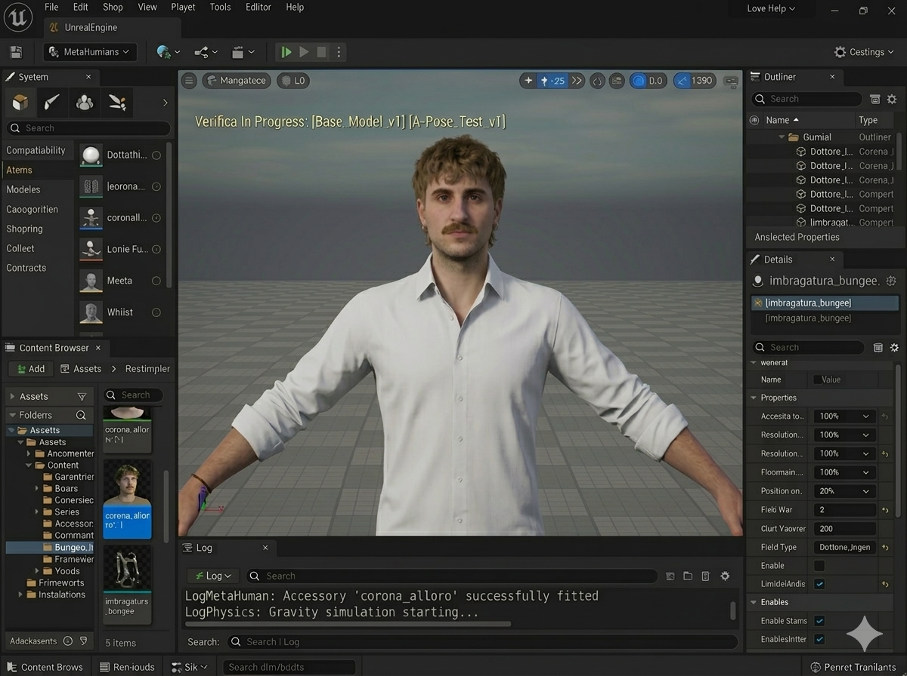
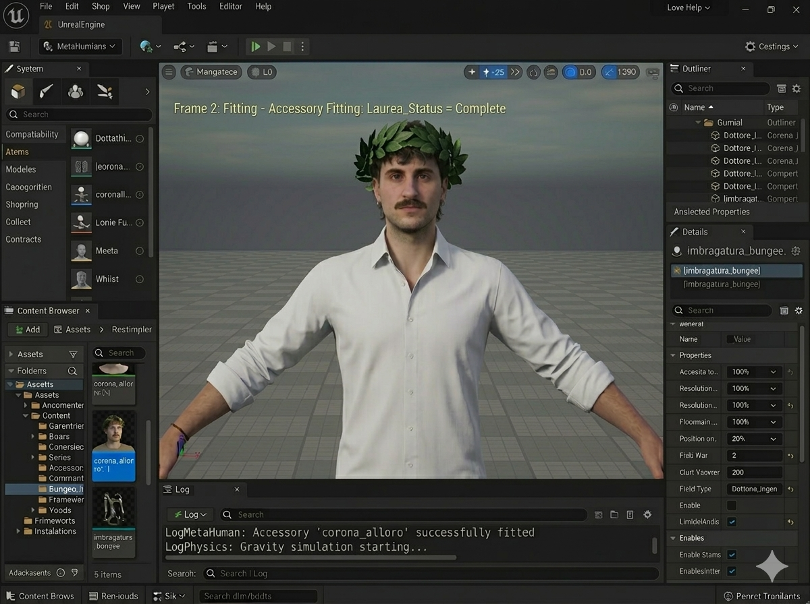
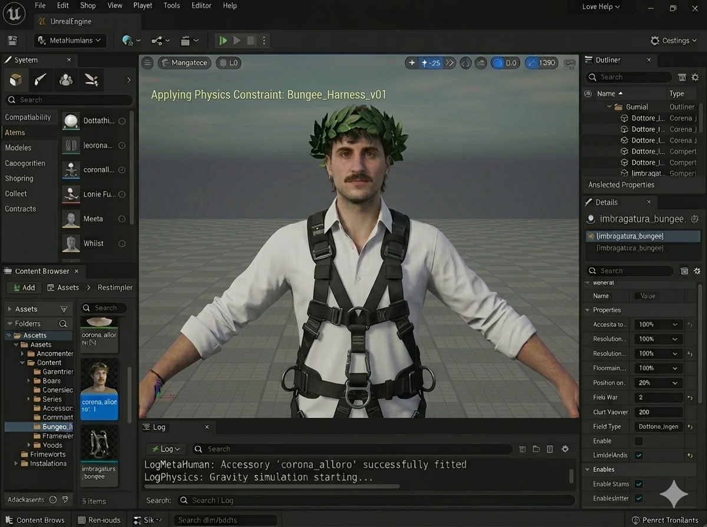

PLUGIN VALIDATION REPORT
Final MetaHuman Stress Test
Department: Cinema & Media Engineering
Institution: Politecnico di Torino
Build Version: Graduation Release
Status: Pending Real-World Validation
System Validation Protocol
Dopo anni di sviluppo, debugging e simulazioni, il plugin MetaHuman Auto-Fitting ha raggiunto la fase finale della pipeline.
Il soggetto di test ha completato con successo tutti i prerequisiti richiesti dal sistema.
- Laurea in Cinema and Media Engineering
- Advanced Unreal Engine knowledge
- High resistance to late night rendering sessions
È quindi possibile avviare il test finale di validazione nel mondo reale.
Frame 01 — Mesh Import

Skeleton: Human_Rig_v3
Pose: A-Pose
Calibration: Complete
Il soggetto viene caricato nel sistema con configurazione standard.
--------------------------------------
Parameters detected:
Technical curiosity: HIGH
Sleep hours: LOW
Coffee dependency: TBC
Frame 02 — Accessory Fitting

Socket: Head
Status: Fitting...
Laurea_Status = COMPLETE
Degree successfully unlocked.
Frame 03 — Physics Constraint

Attachment: Torso
Safety Harness: LOCKED
Elastic Simulation: ACTIVE
Per garantire l'integrità del soggetto durante la simulazione viene installato un sistema di aggancio e supporto toracico ad alta resistenza.
System Status
Thesis compilation completed
Errors: 0
Warnings: 0
Satisfaction: ∞
Ora che hai imparato a simulare la realtà, è arrivato il momento di testare la fisica vera.
Location: Colosso di Veglio
Height: 152 m
Gravity: 9.81 m/s²
Capture Specifications
Resolution: 4K RAW
Audio: 96kHz
Special Effect: Slow motion del panico
L'acquisizione del materiale video è fortemente consigliata per analisi successive e umiliazioni future.
Known Bugs:
- Screaming uncontrollably during simulation
- Temporary loss of dignity
BUNGEE JUMPING
Colosso di Veglio
SCARICA IL VOUCHER- 152 meters of free fall
- Real gravity simulation
- Extreme adrenaline response
- No ESC key available
CONGRATULAZIONI AMORE MIO, SONO FIERA DI TE!!!
Adesso si salta...
Lead Engineer: Ludoz
Production: Cinema & Media Engineering
Politecnico di Torino – Class of 2026
Ti amo
Tua, Rebix